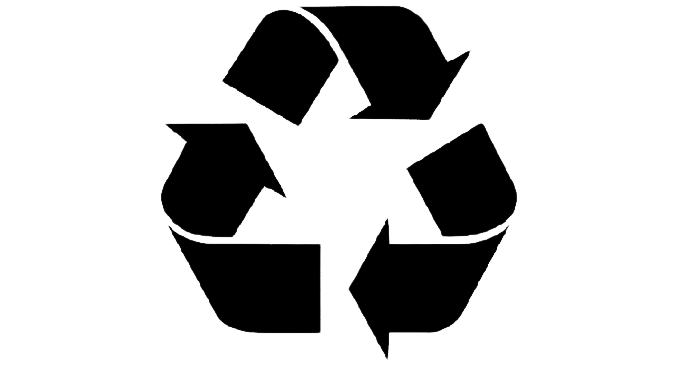
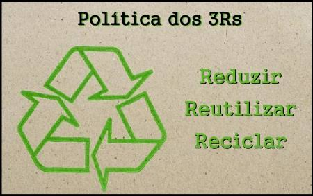

Quando é abordado o tema "Ações que transformam o mundo" vários assuntos podem ser debatidos.
Um exemplo de ação transformadora é a adesão das Energias Renováveis e a Redução de Combustíveis Fósseis, destacando os seus benefícios para o meio-ambiente.

Lâmpada representando a Energia Renovável. Disponível em Freepik
Também será abordado sobre a Reciclagem e a Redução de Resíduos. Sobre a redução do uso do plástico e a compostagem.
Símbolo reciclagem. Disponível em PngWing.
Outro tópico importante de destacar é a regra dos 3R's que nos incentiva a reduzir o desperdício de matérias, reutilizar materiais e reciclar recursos.
Regra dos 3R's. Disponível em PreParaEnem